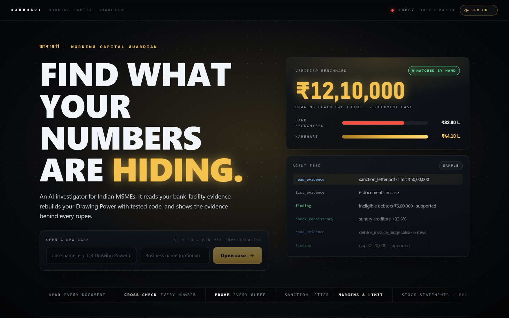
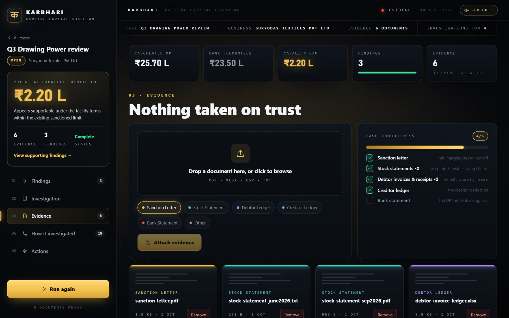
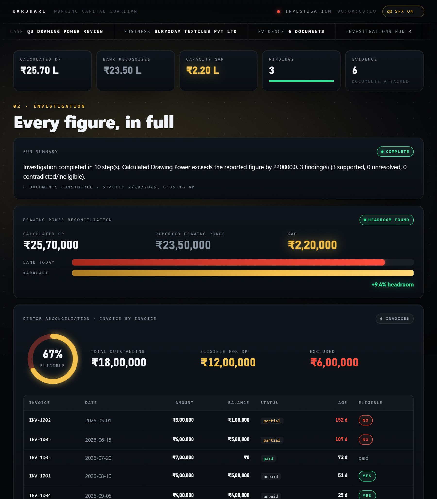
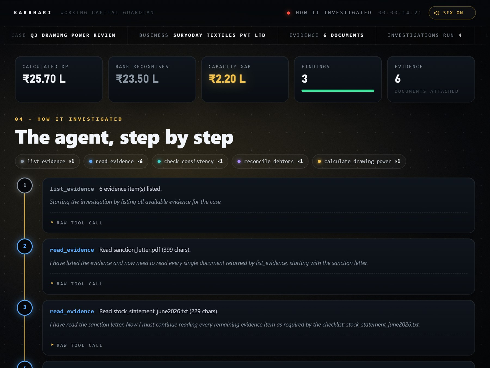

KARBHARI · Project guidev0.7.0 · October 2026
HOW TO USE
KARBHARI
Working Capital Guardian · project guide
Run it, give it a case, and read what it finds. Every screenshot in this guide was captured from a live
run of the real app on the test files that ship with the project.
2
Open a case and attach evidence
KARBHARI Project guide1 · Start the app
Step 1 · Start the app
Two ways to run it.
One API key.
KARBHARI is one FastAPI backend serving a React console. Run it as a single Docker container, or run backend and frontend
separately while developing. Either way you need a Google AI Studio (Gemini) API key; the free tier is enough.
Before you start: the API key
Copy backend/.env.example to backend/.env and fill it in. Keep this file out of git.
GOOGLE_API_KEY=your-key-from-aistudio.google.com/apikey
LLM_PROVIDER=gemini
LLM_MODEL=gemini-flash-lite-latest # an alias, tracks Google's current model
Option A · recommended
Docker: the whole product in one container
# build from the karbhari/ folder
docker build -t karbhari:0.7.0 .
run.bat
# or use the published image
docker run -p 8000:8000 \
--env-file backend/.env \
yieldnever/karbhari:0.7.0
run.bat replaces any old karbhari container and starts the new one. Open
http://127.0.0.1:8000.
Option B · development
Backend + frontend, two terminals
# 1 · backend (Python 3.12+)
cd backend
python -m venv .venv
.venv\Scripts\activate
pip install -r requirements.txt
uvicorn app.main:app --port 8000
# 2 · frontend (Node 20+)
cd frontend
npm install
npm run dev
Open http://127.0.0.1:5173. Vite forwards /api to port 8000.
Check it is alive
curl http://127.0.0.1:8000/api/health
→ {"status":"ok","service":"karbhari-backend"}
Data lives in backend/data/ (SQLite database and uploaded files). Set KARBHARI_DATA_DIR
to keep a separate workspace, for example a clean one for demos.
KARBHARI · Project guide02
KARBHARI Project guide2 · Open a case
Step 2 · Open a case
One case per review.
The lobby is where every investigation starts. Type a case name (for example Q3 Drawing Power review), add the
business name if you like, and click Open case. Your cases appear further down the page; click one to open its workspace.

The lobby · open a case, see the verified benchmark and a sample of the agent at work
On this screen
- Verified benchmark: the ₹12,10,000 gap KARBHARI matched to a hand-worked answer.
- Agent feed: an illustrative sample of the steps the agent takes (labelled sample).
- How it works and what it catches, further down.
Sound and motion
The console uses subtle interface sounds: clicks, a whoosh between tabs, a chime when something is saved
and an impact when a result lands. Toggle them with SFX ON in the top-right corner; your choice is remembered.
KARBHARI · Project guide03
KARBHARI Project guide2 · Attach evidence
Step 2 · Attach evidence
Tag every file.
In the case, open Evidence. Drop a file on the upload area (or click to browse), pick its category chip, then
click Attach evidence. Repeat for each document. PDF (with a text layer), XLSX, CSV and TXT all work.

Evidence · the six test files from ASSETS FOR TESTING, each tagged, with the completeness checklist
| Category | Upload | Gives KARBHARI |
|---|
| sanction letter | The bank's sanction / facility letter | Limit, margins, debtor age cut-off |
| stock statement | Monthly stock statements (attach two months if you have them) | Stock value; period-over-period check |
| debtor ledger | Invoice-level ledger and receipts / payment records | Eligible debtors, rebuilt invoice by invoice |
| creditor ledger | Sundry creditors list | The creditor deduction |
| bank statement | CC account statement showing the DP the bank recognises | The figure to compare against |
The Case completeness checklist ticks off each category as you attach it, so you can see at a glance what is
still missing before you run.
KARBHARI · Project guide04
KARBHARI Project guide3 · Investigate
Step 3 · Run the investigation
Click once.
Watch it work.
Click Run investigation at the bottom of the left rail. A full-screen view shows the agent reading each of your
documents, cross-checking them and calculating Drawing Power. A run usually takes 30 seconds to 2 minutes, depending on
the model's response time.

Investigating · a gold beam ticks off each real document while the live log shows the current step
What happens behind the scenes
list_evidence → read_evidence on every file → check_consistency →
reconcile_debtors → calculate_drawing_power → findings. Bounded at 20 steps. Every number comes from tested
Python, never from the language model.
When it finishes
The overlay lifts, the headline figure in the left rail counts up with gold rings, and you land on
Findings. If the model is slow, the overlay says so after 30 seconds; nothing is lost.
KARBHARI · Project guide05
KARBHARI Project guide4 · Findings
Step 4 · Read the findings
The headline,
then the reasons.

Findings · live result on the bundled test case
The left rail and top strip
- Potential capacity identified: the Drawing Power gap, here ₹2.20 L
(calculated ₹25,70,000 vs ₹23,50,000 recognised by the bank).
- The KPI strip repeats the key figures on every tab.
- Run again re-runs after you add or change files.
How sure each finding is
- supported evidence and a tool output directly back it.
- unresolved incomplete or ambiguous, or an assumption was needed.
- contradicted the evidence works against the claim.
- Open Supporting evidence on any card for the exact quotes.
The gap is headroom within the existing sanctioned limit that appears supportable under the
facility terms. It is not a request for more credit, and not a guarantee the bank will release it.
KARBHARI · Project guide06
KARBHARI Project guide5 · Check the numbers
Step 5 · Check the numbers
Every figure, shown in full.
Open Investigation to see the working behind the headline.

Investigation · reconciliation detail from the live run
Drawing Power reconciliation
Calculated DP, the bank's figure and the gap, drawn as two capacity bars with the headroom
percentage. Any assumption the engine had to make is listed; if inputs are missing, it names them.
Debtor reconciliation
The eligibility ring shows how much of the debtor book counts towards Drawing Power. Below it,
every invoice with balance, status, age and eligibility. In the test case, INV-1002 (152 days) and INV-1005 (107 days) are past
the 90-day cut-off, so ₹6,00,000 of ₹18,00,000 is excluded.
Period-over-period variance
Any figure that moved 20% or more between statements: here stock +25.0%, debtors +29.4% and
creditors +33.3% from June to September. Confirm what drove them before relying on the latest month.
KARBHARI · Project guide07
KARBHARI Project guide6 · Audit
Step 6 · Audit the reasoning
See exactly how it got there.
Open How it investigated for the step-by-step timeline of the live run: the agent's reasoning, the tool it
called and a summary of the result. Expand Raw tool call to see the exact input and output.

How it investigated · the real trace, recorded as it ran
Reading the timeline
Each tool has its own colour, and the pills at the top count how often it ran: one
list_evidence, one read_evidence per file, then the checks and the calculation.
Actions tab
Previews what comes next: a draft note to your bank, an evidence pack PDF, a follow-up checklist and a
monthly watch. These are marked next phase; for now, take the findings and the Investigation tab to your banker or CA.
KARBHARI · Project guide08
KARBHARI Project guideTips
Tips and troubleshooting
Getting a complete answer.
| If you see… | Do this |
|---|
| unresolved Drawing Power was not calculated |
The agent finished before running the calculation. It is non-deterministic, so click Run again; each run is kept in
the case history. |
| …could not be independently calculated. Missing: … | Upload the document named in the message: usually the sanction
letter, a current stock statement or a debtor ledger. |
| …nothing to compare it against | Add a bank / CC statement (or a document stating the DP the branch recognises). |
| Placeholder margins / creditors treated as zero | The sanction letter or creditor ledger wasn't found or readable. The result is an
estimate until you add them. |
| Consistency was not checked in this run | Two same-category statements exist but the agent skipped the comparison.
Re-run, or compare the periods yourself. |
| "No extractable text found" | The PDF is a scan. There is no OCR yet; upload a text PDF, Excel or CSV export instead. |
| "Taking longer than usual" | The model is slow right now. Leave the overlay open; the result appears when the run completes. |
| Investigation could not start | Check GOOGLE_API_KEY in backend/.env and restart. |
| Port 8000 already in use | Another KARBHARI (often the Docker container) is running. Stop it, or start uvicorn with
--port 8010. |
| No sound | Check SFX ON in the top-right. Browsers only play audio after your first click on the page. |
For the best result, upload
- The sanction letter, with margins and the debtor age limit
- Two consecutive stock statements
- Invoice-level debtors and receipts, not just a subtotal
- A creditor list and the bank's recognised DP
Try it now
The six files in karbhari/ASSETS FOR TESTING/ reproduce the run in this guide:
a ₹2.20 L gap and 3 supported findings.
Run the tests: cd backend then python -m pytest -q.
KARBHARI · Project guide09